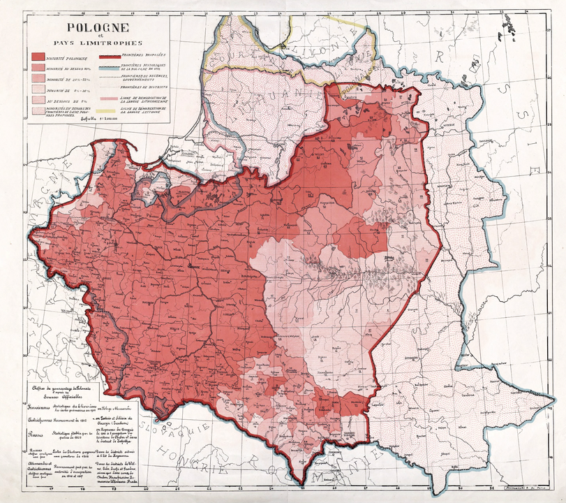

| Roman Dmowski | |
|---|---|
| Pełne imie i nazwisko | Roman Stanisław Dmowski |
| Data i miejsce urodzenia | 9 sierpnia 1864 Kamionek |
Życiorys
Roman Stanisław Dmowski (ur. 9 sierpnia 1864 w Kamionku, zm. 2 stycznia 1939 w Drozdowie) – polski polityk, publicysta polityczny, minister spraw zagranicznych, poseł na Sejm Ustawodawczy II Rzeczypospolitej, poseł II i III Dumy Państwowej Imperium Rosyjskiego. Współzałożyciel Narodowej Demokracji (endecji, ruchu narodowego), główny ideolog polskiego nacjonalizmu. Polski działacz niepodległościowy, związany z ruchem neoslawistycznym, postulujący w pierwszym etapie zjednoczenie wszystkich ziem polskich i uzyskanie autonomii w ramach Imperium Rosyjskiego, a później odzyskanie niepodległości w oparciu o sojusz z Rosją i ententą, w opozycji do Niemiec. Jak wielu Polaków, Dmowski idealizował Zachód i jego instytucje polityczne i społeczne. Wyobrażał też sobie, że Polska odrodzona wprowadzi je u siebie.[1] Koncepcja pro rosyjska zdaniem Dmowskiego wynikała z przekonania, że spośród wielkich sąsiadów Polski to Niemcy, a nie Rosja są bardziej niebezpieczne dla Polski, oraz opierała się na wykorzystaniu momentu nasilenia się trudności wewnętrznych Rosji.[2] Pogląd ten wyrastał z dziewiętnastowiecznej polskiej tradycji nakazującej uważać Polskę za placówkę Zachodu, okupowaną przez wschodnie barbarzyństwo (rosyjskie, przyp. red), a poprzez swój opór i walkę zasłaniającą sobą świat ludzi wolnych przed naporem cywilizacji przymusu i nakazu. Podzielając pogląd o odmienności kulturowej Rosji i Zachodu, jak i o antagonistycznym charakterze różnic dzielących oba światy, Dmowski widział w ziemiach polskich nie tyle placówkę Zachodu, ile pole bitwy. Pod koniec I wojny światowej stał na czele Komitetu Narodowego Polski, który był uznany przez państwa Ententy za namiastkę rządu polskiego na emigracji i przedstawicielstwo interesów Polski. Delegat Polski na konferencję paryską w 1919 i sygnatariusz traktatu pokojowego w Wersalu. Zagorzały przeciwnik polityczny Józefa Piłsudskiego i jego projektu tworzenia państwa federacyjnego – wizji wielowyznaniowej i wielonarodowościowej Polski, twórca inkorporacyjnej koncepcji państwa narodowego, zakładającej polonizację ludności niepolskiej. Jeden z ojców niepodległej Polski
Przodkowie
Pradziadkiem Romana miał być człowiek o imieniu Erazm. Dziadek Romana, Kazimierz (1770–1828) zamieszkał pod Warszawą i został wójtem gminy Kamion (obecnie Kamionek). Kazimierz brał udział w insurekcji kościuszkowskiej. Ojciec Romana, Walenty (1814–1884) był robotnikiem brukarskim na Pradze, następnie właścicielem niewielkiej firmy brukarskiej oraz dzierżawcą jezior Skaryszewskiego i Gocławskiego. Matka Romana, Józefa z Lenarskich (1833?–1914), pochodziła z drobnej szlachty mazowieckiej (jednak już w XVIII w. utraciła szlachectwo z powodu zajęcia się garbarstwem, zmarła w marcu 1914 w Warszawie w wieku 81 lat).
Rodzeństwo
Roman miał dwóch braci Juliana (zm. 1918) i Wacława (1858–1936) oraz dwie siostry Marię (1866–1884?) i Jadwigę, oprócz tego dwoje jego rodzeństwa zmarło w okresie niemowlęctwa, a ich imiona pozostają nieznane.
Dzieciństwo i młodość
W pierwszych latach życia często chorował[potrzebny przypis]. W 1875 roku rozpoczął naukę w III Gimnazjum w Warszawie[17], w wieku 17 lat (1881) założył tajną organizację uczniowską pod nazwą „Strażnica”[18], której głównym zadaniem był opór przed rusyfikacją, wyrażony w tajnych wykładach z języka polskiego, historii, geografii i literatury polskiej. We wrześniu 1886 roku Dmowski wstąpił na wydział fizyczno-matematyczny Cesarskiego Uniwersytetu Warszawskiego (na sekcję nauk przyrodniczych). Po czterech latach nauki ukończył studia, a po złożeniu rozprawy pt. „Przyczynek do morfologii wymoczków włoskowatych” otrzymał „uczony stopień kandydata nauk przyrodniczych”[a][19].
Narodowa Demokracja
W 1888 roku został członkiem warszawskiego koła organizacji młodzieży patriotycznej „Zet”, a potem „starszym” Koła Braterskiego „Zet-u”. W grudniu 1889 roku został przyjęty do Ligi Polskiej[20], skupiającej działaczy zarówno na ziemiach polskich, jak i na emigracji[21]. Około 1890 roku rozpoczął współpracę z tygodnikiem „Głos”[22], gdzie poznał Jana Ludwika Popławskiego, z którym do końca życia się przyjaźnił[23]. Od listopada 1891 do sierpnia 1892 roku studiował w Paryżu. W kwietniu 1893 roku dokonał wraz z kilkoma innymi działaczami przewrotu w Lidze Polskiej i stworzył Ligę Narodową, na czele której stanął[18]. W sierpniu tegoż roku, za współorganizowanie manifestacji narodowej w setną rocznicę Konstytucji 3 Maja, Dmowski po 4 miesiącach aresztu w Cytadeli został zesłany poza obszar Kongresówki[24], do Mitawy. W lutym 1895 roku uciekł stamtąd i osiadł we Lwowie, gdzie objął redakcję dwutygodnika „Przegląd Wszechpolski” oraz współtworzył Stronnictwo Narodowo-Demokratyczne[25]. W 1896 roku na Zjeździe Rady Głównej Ligi Narodowej w Budapeszcie wszedł w skład Rady Głównej Ligi Narodowej[19]. Członek korespondent Towarzystwa Muzeum Narodowego Polskiego w Rapperswilu od 1897 roku[26]. W 1901 roku wrócił do kraju i zamieszkał w Krakowie[22]. W 1903 roku wydał książkę Myśli nowoczesnego Polaka, będącą – jak sam po latach stwierdził – „wyznaniem wiary narodowej”[27]. W 1905 roku przeniósł się do Warszawy[28].
W okresie rewolucyjnym 1904–1906 wystąpił przeciw antyrosyjskiej akcji rewolucyjnej polskich socjalistów[27] Uważał, że sprawy polskiej nie należało łączyć z interesem rosyjskich rewolucjonistów, których cel działania nie był zbieżny z ideą niepodległej Polski[29]. W połowie maja 1904 roku Dmowski dotarł do Tokio[30], aby przekonać tamtejszy rząd, że polskie powstanie antyrosyjskie (propagowane przez Piłsudskiego) w Kongresówce byłoby dla Polaków szkodliwe, a Japończykom także by nie pomogło[18]. Wysunął ponadto, korzystając z osłabienia władzy rosyjskiej, program autonomii Królestwa[31], samorządu wiejskiego i miejskiego[32] oraz spolszczenia szkół i urzędów[33]. Jako doraźne cele polityczne wysunął autonomię Królestwa Polskiego oraz zahamowanie postępów ruchu rewolucyjno-socjalistycznego[19]. W głównej mierze jego zasługą było uzyskanie przez endecję zdecydowanie dominującej pozycji w życiu politycznym Królestwa[34]. Reprezentując Ligę Narodową wziął udział w konferencji stronnictw opozycyjnych i organizacji rewolucyjnych działających w Rosji, odbywającej się w Paryżu w 1904 roku[35]. Przyjęta tam rezolucja mówiła o autonomii Królestwa Polskiego i potrzebie konstytuanty w Warszawie[36].
W grudniu 1905 roku[19] objął redakcję „Gazety Polskiej”[28]. W lutym 1907 roku został wybrany posłem do rosyjskiej II Dumy, w której został przewodniczącym koła polskiego, i napisał książkę Niemcy, Rosja i kwestia polska, w której przedstawił położenie polityczne Polski i jej zaborców[25]. Główne założenia książki były następujące: największym zagrożeniem dla Polaków były Prusy i ich polityka germanizacji, która doprowadziłaby do „proletaryzacji” narodu polskiego; zaznaczał po drugie, iż dla Prus kwestia istnienia państwa polskiego była kwestią „być albo nie być” Prus. Ponadto tereny zagarnięte przez Prusy należało rozpatrywać jako kolebkę państwowości Polski[37]. Dmowski w książce wskazywał, że dla Rosji i Austrii kwestia polska była wyłącznie problemem lokalnym[potrzebny przypis], podczas gdy dla Niemiec zasadniczą sprawą powiązaną z ich ekspansją w kierunku wschodnim[38]. Z tego względu Dmowski uważał, że Niemcy będą oponować porozumieniu Polaków z Habsburgami i ewentualnym wzmocnieniu pozycji polskiej na terenie Austro-Węgier, a także będą podejmować próby współpracy z Rosją przeciw Polsce. Dmowski zaprezentował pogląd, że Rosja umożliwia polityczne zjednoczenie narodu polskiego zaznając jednocześnie, że „rozwiązanie kwestii polskiej leży w rękach Rosji”. Dodatkowo stwierdził on, że nie chodzi mu o Kresy, lecz jedynie o tereny Królestwa Kongresowego[39].
Roman Dmowski, zgodnie z programem wszechpolskim, uważał że sprawę Polski należy łączyć z przymierzem francusko-rosyjskim przeciw Niemcom[29]. Obawiając się, że Rosja wciąż jest niezdecydowana pomiędzy Berlinem a Londynem, Dmowski starał się przekonać Rosję o swej i Polaków lojalności do Imperium Rosyjskiego[27]. Uczynił to, stając po stronie ruchu neoslawistycznego[40], którego głównym założeniem była wspólna obrona narodów słowiańskich przed ekspansją Niemiec oraz przekształcenie Austro-Węgier w federację narodów słowiańskich[41]. Czyniąc to zamierzał przenieść dialog z poziomu polsko-rosyjskiego na międzynarodowy podczas Zjazdu Słowiańskiego w Pradze[42], co zmusiłoby Rosjan do traktowania Polaków jako równorzędnego partnera. Jednakże jego wysiłki spotkały się z nikłym odzewem ze strony rosyjskiej[43]. W samym kraju wielu Polaków było zszokowanych jego postawą i prorosyjskim nastawieniem, co spowodowało, że wówczas z Ligi Narodowej odeszło około 20% członków[37], a wiele pobocznych organizacji zerwało z nią kontakty. Sami Rosjanie zaś zażądali zgody na odłączenie od Królestwa Kongresowego regionu Chełmszczyzny i włączenie do cesarstwa[44] w zamian za znikome zwiększenie autonomii[potrzebny przypis]. Także i inne działania rządu rosyjskiego wskazywały wyraźnie, że apele Dmowskiego pozostały bez odpowiedzi. Ponownie wybrany do III Dumy w październiku 1907 roku[45] w lutym 1909 roku złożył mandat, gdy został przegłosowany na posiedzeniu partii[46].
W wyniku serii rozłamów w latach 1907–1911 endecja utraciła wpływ na młode pokolenie, jednak Dmowski zadecydował o utrzymaniu kursu pojednania z Rosją[21]. Częściowo pomagał mu fakt, iż znaczna część społeczeństwa polskiego pod zaborem rosyjskim skierowała swe emocje przeciw Ukraińcom i Żydom[34]. Organizacyjne i wyborcze sukcesy Narodowi Demokraci przeżywali w zaborze pruskim, zakładając swe struktury w 1909 roku w Poznaniu[47], a w 1911 na Pomorzu. Miejscem niepowodzeń endecji była natomiast Galicja, gdzie przegrywali ze stronnictwem konserwatystów i organizacją Wincentego Witosa[48].
W owym czasie Dmowski i inni członkowie jego organizacji deklarowali, iż Żydzi szkodzą interesom Polski i Rosji, co doprowadziło do jego porażki w wyborach warszawskich do IV Dumy w 1912 roku[34]. Powodem przegranej było masowe poparcie licznej żydowskiej społeczności Warszawy, która wsparła Jagiełłę, wówczas mało znanego kandydata PPS – Lewicy. W odpowiedzi Dmowski zażądał ekonomicznego bojkotu przeciwko przedsiębiorstwom i zakładom żydowskim[37].
W dniach 15–19 września 1912 roku Dmowski wraz z przywódcami frakcji polskich w parlamentach państw zaborczych Władysławem Seydą i Stanisławem Głąbińskim wziął udział w tajnym zjeździe w majątku Pieniaki pod Lwowem. Uchwalono wtedy, że w nadchodzącej wojnie Polacy ze wszystkich trzech zaborów poprą stronę przeciwną Niemcom[49][50].
W 1913 roku wykładał na zjazdach Rady Głównej Ligi Narodowej w Berlinie, rok później w Wiedniu, gdzie mówił o tym, czym byłoby dla Polski zwycięstwo państw germańskich, a także o istocie ewentualnego zjednoczenia zaborów[19]. Do Warszawy wrócił w czerwcu 1913 roku. Wtedy też napisał książkę pt. Upadek myśli konserwatywnej w Polsce[51].
Choć endecy nie mogli otwarcie głosić prorosyjskich idei Dmowskiego w Galicji, to wykorzystali fakt powiązania ukraińskich narodowców z Niemcami, by ostrzegać przed proniemiecką polityką Habsburgów i wskazywać Ukraińców jako wrogów Polski[52]. Stawali tu w opozycji do namiestnika Michała Bobrzyńskiego, który był zwolennikiem rozwiązania Austro-Polskiego i pragnął zaangażować Ukraińców do budowy wspólnego frontu antyrosyjskiego
I wojna
Ostatnie pół roku przed wybuchem wojny poświęcił w całości wielkiej aktywności politycznej, której celem było przygotowanie ruchu narodowego na rychły konflikt zaborców.
Bardzo dobrze przyjął deklarację złożoną 8 sierpnia 1914 roku w Dumie Państwowej przez swojego przyjaciela i posła Wiktora Jarońskiego, dotyczącą solidarności narodu polskiego z Rosją w jej walce z Niemcami. Napisał o niej później: „Nigdy w życiu żaden nasz krok polityczny mię tak nie ucieszył”[55].
Od wybuchu I wojny światowej konsekwentnie działał na rzecz klęski Niemiec, utworzył w Warszawie Komitet Narodowy Polski, stojący na gruncie manifestu wielkiego księcia Mikołaja Mikołajewicza Romanowa do Polaków z 14 sierpnia 1914. W odpowiedzi na deklarację wodza naczelnego wojsk rosyjskich wielkiego księcia Mikołaja Mikołajewicza Romanowa z 14 sierpnia 1914 roku, podpisał telegram dziękczynny, głoszący m.in., że krew synów Polski, przelana łącznie z krwią synów Rosyi w walce ze wspólnym wrogiem, stanie się największą rękojmią nowego życia w pokoju i przyjaźni dwóch narodów słowiańskich[56].
Po zajęciu Warszawy przez Niemców wyjechał do Petersburga, gdzie brał udział w pracach komisji polsko-rosyjskiej, mającej ustalić zasady przyszłej autonomii Królestwa. W 1915 roku udał się przez Finlandię i Szwecję na Zachód i rozpoczął akcję na rzecz Polski w stolicach zachodnich państw Ententy. Odbył podróże do Rzymu i Lozanny. W lutym 1916 roku złożył memoriał na ręce ambasadora rosyjskiego w Paryżu – Izwolskiego, w którym po raz pierwszy wysunął niepodległość Polski jako realny plan polityczny – został on negatywnie przyjęty przez stronę rosyjską. Podobnie jak przez Papiestwo którego przedstawiciel pełniący funkcję sekretarza stanu Stolicy Apostolskiej kardynał Pietro Gasparri w rozmowie z nim oświadczył
Polska niepodległa? Ależ to marzenie, to cel nieziszczalny. Wasza przyszłość jest z Austrią
11 sierpnia 1916 roku za cykl wykładów, otrzymał doktorat honoris causa na Uniwersytecie w Cambridge.

W lipcu 1917 roku rozesłał czołowym przedstawicielom świata politycznego państw zachodnich memoriał pt. „Problems of Central and Eastern Europe”, w którym sformułował program terytorialny przyszłej niepodległej Polski. W 1917 roku został prezesem utworzonego przez siebie w Lozannie Polskiego Komitetu Narodowego uznanego przez państwa zachodnie za oficjalne przedstawicielstwo narodu polskiego, którego zadaniem było odbudowanie państwa polskiego oraz sprawowanie opieki cywilnej nad Polakami przebywającymi na terenie państw zachodnich. We Francji, z jego inicjatywy, została zorganizowana 100-tysięczna Błękitna Armia, która po przetransportowaniu wraz z pełnym wyposażeniem do Polski, stała się podstawą odradzającego się Wojska Polskiego w trudnym okresie walk o granice.
Konferencja paryska i traktat wersalski
Na początku 1919 Roman Dmowski został delegatem pełnomocnym Polski na konferencję pokojową w Paryżu[58]. 29 stycznia wygłosił na posiedzeniu Rady Dziesięciu, 5-godzinne exposé dotyczące całości polskich żądań (które sam przekładał od razu na język angielski i francuski, gdyż nie ufał obcym tłumaczom, którzy wcześniej niedokładnie tłumaczyli jego słowa[59]). Zdaniem niektórych komentatorów, zaimponował słuchaczom umiejętnością improwizacji, logiką wywodu i znajomością tematu[b].
W trakcie konferencji działalność Dmowskiego, równolegle z działaniami powstańczymi i wojennymi w kraju, odegrała kluczową rolę w kształtowaniu granic Polski. Po przyjeździe do Paryża Paderewskiego, który jako premier objął główną rolę w negocjacjach, Dmowski zszedł chwilowo na drugi plan, działając przez jakiś czas w komisji do spraw Ligi Narodów[61]. 
28 czerwca 1919 w sali zwierciadlanej Wersalu Dmowski wraz z Paderewskim podpisali traktat wersalski, przywracający formalnie Polskę na mapę Europy. Rokowania te doprowadziły do uznania Polski z Wielkopolską i Pomorzem Gdańskim, nakazania referendum na Warmii, Mazurach i Górnym Śląsku oraz ustanowienia Wolnego Miasta Gdańska. 10 września Dmowski podpisał także traktat pokojowy koalicji z Austrią w Saint-Germain.
Dmowski był zwolennikiem inkorporacyjnej koncepcji wschodniej granicy Polski, pozostającej w opozycji do federacyjnych planów Piłsudskiego. Ostatecznie wizja postulowanych przez Dmowskiego granic w sporej części pokrywała się z granicami II RP. Również, po fiasku koncepcji federalistycznej, ostatecznie zrealizowana została idea inkorporacji ziem wschodnich.
Podróże
| Rok | Miejsce |
|---|---|
| 1898 | Anglia |
| 1898 | Francja |
| 1899 | Anglia |
| 1900 | Brazylia |
| 1904 | Japonia |
| 1932 | Algeria |